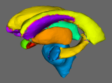

|  | FIRST v1.2FMRIB's Integrated Registration and Segmentation ToolSubcortical brain segmentation using Bayesian shape & appearance models. |
FIRST is a model-based segmentation/registration tool. The shape/appearance models used in FIRST are constructed from manually segmented images provided by the Center for Morphometric Analysis (CMA), MGH, Boston. The manual labels are parameterized as surface meshes and modelled as a point distribution model. Deformable surfaces are used to automatically parameterize the volumetric labels in terms of meshes; the deformable surfaces are constrained to preserve vertex correspondence across the training data. Furthermore, normalized intensities along the surface normals are sampled and modelled. The shape and appearance model is based on multivariate Gaussian assumptions. Shape is then expressed as a mean with modes of variation (principal components). Based on our learned models, FIRST searches through linear combinations of shape modes of variation for the most probable shape instance given the observed intensities in your T1 image.
For more information on FIRST, see the D.Phil. thesis or the FMRIB technical report. The thesis provides a more thorough and complete description.
1. Brian Patenaude. Bayesian Statistical Models of Shape and Appearance for Subcortical Brain Segmentation. D.Phil. Thesis. University of Oxford. 2007.
2. Brian Patenaude, Stephen Smith, David Kennedy, and Mark Jenkinson. Improved Surface Models for FIRST. In Human Brian Mapping Conference, 2008.
3. Brian Patenaude, Stephen Smith, David Kennedy, and Mark Jenkinson. FIRST - FMRIB's integrated registration and segmentation tool. In Human Brain Mapping Conference, 2007.
We are very grateful for the training data for FIRST, particularly to David Kennedy at the CMA, and also to: Christian Haselgrove, Centre for Morphometric Analysis, Harvard; Bruce Fischl, Martinos Center for Biomedical Imaging, MGH; Janis Breeze and Jean Frazier, Child and Adolescent Neuropsychiatric Research Program, Cambridge Health Alliance; Larry Seidman and Jill Goldstein, Department of Psychiatry of Harvard Medical School; Barry Kosofsky, Weill Cornell Medical Center.
The simplest way to perform segmentation using FIRST is to use the run_first_all script which segments all the subcortical structures, producing mesh and volumetric outputs (applying boundary correction). It uses default settings for each structure which have been optimised empirically.
first_flirt, run_first
and first) on all the structures, with the settings
(number of modes and boundary correction) tuned to be optimal for each
structure. Both mesh (vtk) and volumetric (nifti) outputs are
generated. Corrected and uncorrected volumetric representations of
the native mesh are generated. The final stage of the script ensures
that there is no overlap between structures in the 3D image, which can
occur even when there is no overlap of the meshes, as can be seen in
the individual, uncorrected segmentation images in the 4D image file.
run_first_all -i t1_image -o output_name
The argument -i specifies the original T1-weighted structural image.
The argument -o specifies the filename for the output image basename.
run_first_all will include the type of boundary correction into the final file name. For example, the command above would
produce output_name_all_fast_firstseg.nii.gz and output_name_all_fast_origsegs.nii.gz.
*Note that this usage is very different from previous versions*
The script is written such that if you have FSL setup to use local
cluster computing it will automatically parallelise the fitting of
each structure.
Either way, it will create a log directory that contains the error outputs of each command, and you should check these. To do that simply do: cat *.logs/*.e*
and if there are no errors then you will see no output, otherwise you will see what errors have occured.
If another boundary correction method is specified, the
name fast in this filename will change to reflect the boundary
correction that is used. Note that if only one structure is specified
then this file will be called output_name-struct_corr.nii.gz
instead (e.g. sub001-L_Caud_corr.nii.gz).
sub001-L_Caud_first.nii.gz).
L_Accu L_Amyg L_Caud L_Hipp L_Late L_Pall L_Puta L_Thal R_Accu
R_Amyg R_Caud R_Hipp R_Late R_Pall R_Puta R_Thal BrStem.
It runs the script slicesdir on a region of interest (ROI) defined by a
set of label images (e.g. output of FIRST). A set of temporary ROI
images are created and then slicesdir is then run on those.
Usage:
first_roi_slicesdir <list of t1_images> <list of label_images>
Example:
first_roi_slicesdir *_t1.nii.gz *_all_fast_firstseg.nii.gz
The pathnames for files used as input options for all of the steps of FIRST should start in this directory and may include subdirectories as needed. The reason for this is that the pathnames of the structural input images are written into the bvars output files. When these bvars files are used (i.e. for vertex analysis), the original image must be able to be located. Inputting full pathnames is possible, but if you move the directory containing the structural images, the pathnames within the bvars files will have to be changed. Therefore, we recommend keeping all FIRST inputs and outputs in one main directory and keeping all pathnames relative to this directory. This way, if the entire directory is moved then the relative position of all input and output files will remain the same.
For example, imagine you have a directory
called scratch, and you create a sub-directory
called subcort. Start by copying all of your images into
the subcort directory. Once this is done, all subsequent
steps should be carried out from within the directory
subcort.
con01.nii.gz,
con02.nii.gz, ..., dis01.nii.gz, dis02.nii.gz, ... and keep the
base name part (i.e. con01) the same for all outputs of
FIRST.
run_first_all on a group of subjects a
simple "for" loop may be used from the command line:
for i in 01 02 03 04 05 06 07 08 09 10 ; do run_first_all -i con${i} -o con${i} ; done
A similar loop can then be run for the diseased subjects
(dis01, ..., dis10). These commands could be put into
one big for loop, but it is usually simpler to separate them,
especially if you have a different number of subjects in each group.
cat *.logs/*.e*slicesdir tools.
${FSLDIR}/bin/slicesdir -p ${FSLDIR}/data/standard/MNI152_T1_1mm.nii.gz *_to_std_sub.nii.gz
This command creates a directory called "slicesdir" which will
contain a webpage output of the summary results for each subject's
registration. Note that if the registration stage failed then the
model fitting will not work, even
though run_first_all will continue to run and generate
output. Therefore it is critical to check the registration results.
On the webpage, each subject's registered image
(*_to_std_sub.nii.gz) will be displayed in sagittal,
coronal, and axial views, with a red outline showing the edges
from MNI152_T1_1mm standard brain. Open this webpage in
any web browser.
When assessing the registrations, pay particular attention to the sub-cortical structures. It does not matter if the cortex does not always align well, particularly where there are large ventricles, as it is the alignment of the sub-cortical structures which is important for the segmentation.
Firstly, fix any registration errors (see below
for first_flirt and various options available) and re-run
the segmentation using the new registration. After that the
segmentation output can be inspected. This can be done
using first_roi_slicesdir which generates a similar
webpage, but this time showing the segmentations.
If there are any problems, you can try different segmentation options (e.g. number of modes, boundary correction method, etc.) using the individual tools described in the Advanced Usage section.
Vertex analysis is performed using first_utils in a mode
of operation that aims to assess group differences on a per-vertex
basis. It uses a multi-variate GLM to do the statistical analysis.
The simplest, and very common, design matrix is a single EV
(regressor) specifying group membership (zero for one group, ones for
the other) which then tests for group differences.
The output is a series of meshes that are viewable in FSLView. The base mesh is the mean mesh for the first group and the vectors are the displacement vectors between group means.
The slider in the mesh controls panel in FSLVIEW will allow you to deform the mesh between the group means. The surface colouring is the multivariate F statistic (based on Pillai's Trace). The length of the vectors and the statistics are not linearly related - the former is dependent only on the mean difference between groups while the latter is a statistic that takes the variances into account.
first_utils --vertexAnalysis --usebvars -i concatenated_bvars -d design.mat -o output_basename [--useReconNative --useRigidAlign ] [--useReconMNI] [--usePCAfilter -n number_of_modes]
Glm GUI).
For more complicated design matrices, with multiple EVs, each EV is tested in turn (with an implicit contrast that is one for that EV and zero for all others). A separate test is run for each such contrast, so that N results are generated when there are N EVs. Also, the constant EV is always implicitly added and user-specified EVs are demeaned. The contrast never includes the constant EV.
When the groups are not obviously defined (e.g. the EV is not a group membership EV) they are implicitly generated such that first group consists of all subjects where the (demeaned) EV in question is less than or equal to zero, and the second group consists of the remaining subjects. For a simple group membership EV (testing the difference between two groups) this is a simple relationship where the "first" group are the ones with the lower values in the EV. For other regressors (e.g. an age covariate) this definition of "groups" will not be so intuitive, however it is useful to work out so that the direction of the mean difference vectors can be interpretted.
concat_bvars is used to concatenate the
".bvars" files across subjects. All subjects should be
created using the same model and concat_bvars will keep
track of the number of subjects that the final, concatenated file contains.
Usage:
concat_bvars output_name.bvars [list of ".bvars" files]
Example:
concat_bvars L_Hipp_all.bvars con*_L_Hipp_first.bvars dis*_L_Hipp_first.bvars
Multiple Comparison Correction
Currently the only available method uses False Discovery Rate (FDR)
correction via the utility surface_fdr. In the future we
plan to implement cluster-based corrections
via randomise.
surface_fdr
Usage:
surface_fdr input.vtk
Outputs:
Will create files input_Fthresh.vtk
and input_pvals.vtk and some small image files (which can
be ignored). The first mesh output, input_Fthresh.vtk is
a mesh containing the thresholded F statistics; that is, those that
survive the FDR thresholding. The second mesh
output, input_pvals.vtk is a mesh containing
the uncorrected p-values. The utility will also output the FDR
threshold (as a p-value) when running. This FDR threshold can be used
to threshold this p-value mesh to create the same significant areas as
in the thresholded F-statistic mesh output.
As of FSL4.1.3, all FIRST vtk outputs from vertex analysis contain the relevant Degrees Of Freedom and bvars files contain registration matrices (and are now in a binary format). Also, as substantial improvements in the sensitivity of the statistics were made between FSL4.1.2 and FSL4.1.3, it is recommended and necessary to re-run previous vertex analyses with the newer version of FIRST and not attempt to combine with outputs generated by previous versions.
This section covers some general recommendations for running vertex analysis. The following is not prescriptive but may be helpful, especially to new users or those less familiar with unix-style commands and environments.
Getting started:
To begin with you need to generate segmentations of all the structure of interest in all subjects (see the segmentation section). Note that it is the bvars files, which correspond directly to the meshes, which will be needed and the volumetric representation is not used. Hence it does not matter what boundary correction was used or whether one or more structures were segmented.
One the segmentations are done, concatenate all of the bvars files for
the structure you are going to run vertex-wise stats on. For example
if you are looking for differences in the left hippocampus, and
assuming your output bvar files are
named con*_L_Hipp_first.bvars and
dis*_L_Hipp_first.bvars, do
concat_bvars con_to_dis_L_Hipp.bvars con*_L_Hipp_first.bvars
dis*_L_Hipp_first.bvars
This command will create a bvars file
called con_to_dis_L_Hipp.bvars that contains the bvars
(mode paramters) of the segmentation of the left hippocampus from each
subject in the order con01-con10, followed by dis01-dis10.
Create a design matrix:
This is easiest done by using the "Higher-level" mode of
the Glm gui (note that you can also make a text file of
the design matrix directly). However, the design matrices are treated
slightly differently by FIRST compared with FEAT. One difference is
that FIRST does not model separate group variances and so ignores the
"Group" column in the Glm gui. Another difference is
that FIRST demeans the design matrices and performs its own contrasts,
therefore it is not necessary to set up contrasts in
the Glm gui (they will be ignored) and it is not
necessary to demean your EVs (FIRST will do this automatically) or
include a constant EV (FIRST will do this too).
For this example, imagine you are simply interested in finding a
difference in shape between the two groups "con" and "dis". Your
design matrix would simply be an EV with 10 ones followed by 10
zeroes. That is:
0
0
0
0
0
0
0
0
0
0
1
1
1
1
1
1
1
1
1
1
Create this design and save it in a file
called con0_dis1.mat (choose the
name con0_dis1 in the "Save" dialog of
the Glm GUI). Note that because the concatenated bvars
files was created in the order "con", then "dis", in your design
matrix zeroes correspond to "con" and ones to "dis".
You are now ready to run vertex_analysis. Note that for this example,
the --useReconNative option will be used. This carries
out vertex analysis in native space, along with
the --useRigidAlign
option. The --useReconMNI option may also be used to
carry out vertex analysis, it will do it in the MNI standard space
instead. The --useReconNative is often more sensitive to
changes in shape, however there may be exceptions and it is
recommended to try both the --useReconNative and
the --useReconMNI options. Also note that
the --useScale option will not be used. Without
the --useScale option, changes in both local shape and
size can be found in shape analysis. This type of finding can be
interpreted, for example, as local atrophy. With
the --useScale option, overall changes in size are lost.
Create a new directory (e.g. called shape_analysis)
within the current main directory. This will be where the results of
shape analysis are saved. For example, mkdir shape_analysis
Running vertex analysis:
first_utils --vertexAnalysis --usebvars -i con_to_dis_L_Hipp.bvars -d con0_dis1.mat -o shape_analysis/con0_dis1_L_Hipp --useReconNative --useRigidAlign -v >& shape_analysis/con0_dis1_L_Hipp_output.txt
Note that the -v option displays the details of certain
calculations to the command line and the >& option
captures this output into a file (here called
con0_dis1_L_Hipp_output.txt). This output may be useful
to save.
Output of vertex analysis:
In the shape_analysis directory there will be a file
called con0_dis1_L_Hipp1.vtk. This is the 3D mesh
displaying the results of vertex analysis (the number 1 represents the
first EV tested - in this case the only one). Open FSLView and add a
standard brain. Start the 3D viewer and turn off the standard brain
(this was simply added to get the 3D viewer started). Click the add
mesh button and open the con0_dis1_L_Hipp1.vtk file. A 3D
surface of the hippocampus will open with the uncorrected F stats for
the difference between groups displayed at each vertex on the surface.
Something like this (initially without the vectors, but see below):
The colour bar indicates the statistic values; an increase from red to blue is going from a lower to higher statistical significance. Note that the colours only indicate where any difference between groups was found, not the direction of this difference. The vectors (little arrows shown on the surface) indicate the direction of change. Open the mesh properties window. Scale the vectors by a value of 2 to 5 for better visualization. These vectors point from the mean surface of whatever subjects corresponded to a value of 0 or less in the design matrix (demeaned EV1) to the mean surface of others subjects. In this case controls were given a value of 0 and diseased a value of 1. Therefore FIRST would have demeaned this design matrix so that controls had a value of -0.5 and diseased had a valued of +0.5. These vectors therefore point from the mean surface of control group (viewed by sliding the mesh slider to position 0) to the mean surface of diseased group (viewed by sliding the mesh slider to position 1). In this case, if the vector points inward at a given vertex, then that means that that vertex on the mean control surface moves inward to reach the same vertex on the mean diseased surface. For example, on the side of the hippocampus in the image above you can see a large patch of blue with vectors pointing inward. These vectors indicate that the direction of difference is such that the diseased hippocampus is smaller/thinner here than in the control group, consistent with local atrophy. Note that the vectors give direction while the colours indicate the statistical strength of the difference in any direction.
Running Multiple Comparison Correction:
Following this you should correct for multiple comparisons to get corrected statistics. Do this with:
surface_fdr con0_dis1_L_Hipp1.vtk
This generates an output
called con0_dis1_L_Hipp1_Fthresh.vtk which you can then
view in FSLView, in the same way as above, and only shows non-zero
statistics where they survived the FDR multiple comparison correction.
Note that an FDR threshold of zero means that no vertices have
survived multiple comparison correction.
Other common design matrices:
Correlation
For correlation only (no group difference) you can create a design matrix with one column (EV) where each row contains the value of the correlating measure for each subject in the same order as the subject's bvars (in the concatenated bvars file). For example, to correlate age with shape, the design matrix would contain one EV, which would be a single column where each row has the age of each subject in the same order as the concatenated bvars file. There is no need to demean the age values, as FIRST will demean them for you.
Interpretting the results of a correlation: the colours on the surface of the mesh will display the strength of the correlation at each vertex, while the vectors will display the direction of the correlation. Surface 0 on the slider is the mean surface for all of the subjects younger than the mean age, while surface 1 on the slider is the mean surface for all of the subjects older than the mean age. The vectors point from surface 0 to surface 1, which is from the younger group to the older.
You can also do correlation with a covariate (see below). This gives you statistics as explained above (but accounting for the other EVs) but the interpretation of the vectors will no longer be the same as that described above, but will instead depend only on the groupings defined by the first column of the design matrix (EV1).
Covariate
To add a covariate to a group difference study, simple add a second
column to the design matrix for the group difference. This second
column should contain the raw scores (for each subject in the same
order as the concatenated bavrs file) of the measure you wish to use
as a covariate; for example, age. Vertex analysis will now produced
two vtk files, with one file called output_name1.vtk,
showing the areas of group difference after accounting for the
covariate. The file called output_name2.vtk, on the other
hand, will show the areas that correlate with the covariate
(e.g. age) after accounting for group difference.
Note that the mean surfaces and vectors will be the same in each case (although vectors only show at vertices where the statistics were significant, and these statistics will vary) since the mean surfaces and vectors are always defined by the grouping in the first column of the design matrix (EV1), with the first group being all values below the mean and the second group being all values above the mean.
Currently, to perform volumetric analysis
it is necessary to determine the label number of the structure of interest and use fslstats to measure the volume. Other software
(e.g. SPSS or MATLAB) needs to be used to analyse the volume measurements.
To find the label number, load the output_name_*_firstseg.nii.gz image into FSLView, click on a voxel in the structure of interest and the label number will be the number in the Intensity box. Alternatively, you can find the number from the
CMA standard labels.
Once you have the label number you can measure the volume using fslstats with the threshold options to select out just the single label number (by using -l and -u with -/+0.5 from the desired label number). For example, if the label number is 17 (Left Hippocampus) then you can use the following command:
fslstats output_name_all_fast_firstseg -l 16.5 -u 17.5 -V
where the first number of the output is the number of voxels and the second is the volume in mm3.
${FSLDIR}/data/first/models_336_bin/. The models
were constructed from 336 subjects, consisting of
children and adults, normals and subjects with pathologies.
intref_thal/ subdirectories use
the intensities from within the thalamus to normalize the structures'
intensities.
05mm/ subdirectory
require no boundary correction (all boundary
voxels are considered part of the structure).
The following sections detail the more fundamental commands that
the script run_first_all calls. If problems are encountered
when running run_first_all, it is recommended that each of the
individual stages described below be run separately in order to
identify and fix the problem.
FIRST segmentation requires firstly that you run first_flirt
to find the affine transformation to standard space, and secondly
that you run run_first to segment a single structure
(re-running it for each further structure that you require). These
are both run by run_first_all which also produces
a summary segmentation image for all structures.
Please note, if the registration stage fails then the models
fitting will not work, despite the fact that run_first_all
continues to run and may produce outputs.
This script runs two-stage affine registration to MNI152 space at
1mm resolution (we will assume for these instructions that the image
is named con01.nii.gz). The first stage is a standard 12
degrees of freedom registration to the template. The second stage
applies a 12 degrees of freedom registration using an MNI152
sub-cortical mask to exclude voxels outside the sub-cortical regions.
The first_flirt script now registers to the non-linear
MNI152 template. The new models that are located
in ${FSLDIR}/data/first/models_336_bin/ were all trained
using that template for normalization.
Included with FIRST, are models for the left and right
cerebellum. Instead of using a subcortical mask in the second stage of
the registration procedure, a mask of the brain was used. When fitting
the cerebellum models, you will need to input a different
transformation matrix than that used for the other
structures. first_flirt will not perform the
necessary registration by default, the -cort flag must be
specified. The cerebellum uses the putamen intensities to
normalize its intensity samples (use the -intref option).
first_flirt should be used on whole-head
(non-betted) images. Although it is generally discouraged, the
flag -b will allow first_flirt to also be
used on brain extracted data.
first_flirt con01 con01_to_std_sub
This command uses the T1-weighted image con01.nii.gz
as the input and will generate the registered
(con01_to_std_sub.nii.gz) and the transformation matrix
(con01_to_std_sub.mat).
first_flirt
should perform the alternate "second stage" in addition to the
standard procedure ("_cort" will be appended to the output
name). Rather than using a subcortical mask, a brain mask is
used. This option should be used if intending to run the
cerebellum models.
You should verify that the registrations were successful prior to
further processing (e.g. using ${FSLDIR}/bin/slicesdir -p
${FSLDIR}/data/standard/MNI152_T1_1mm.nii.gz
*_to_std_sub.nii.gz). When assessing the registration, pay
attention to the sub-cortical structures. Note that the cortex may not
always align well, particularly where there are large ventricles.
This script will run FIRST to extract a single structure. The main arguments that are required are: (-i) the input image, (-t) transformation matrix, (-o) name of output image, (-n) the number of modes of variation and (-m) the model.
-i : the T1-weighted image to be segmented.
-t : the matrix that describes the transformation of
T1-weighted image into standard space, concentrating on subcortical
structures (as found by first_flirt).
-n : the number of modes of variation to be used in the
fitting. The more modes of variation used the finer details FIRST may
capture, however you may decrease the robustness/reliability of the
results. The more modes that are included the longer FIRST will take
to run. The current suggested number of modes is for each structure is
given in sub-cortical
labels and incorporated into the defaults
for run_first_all. The suggested number of modes is based
on leave-one-out cross-validation run on the training set. The maximum
number of modes available is 336.
-o : the basename to be used for FIRST output files. Three files are
output: output_name.vtk, output_name.nii.gz
and output_name.bvars if "-o output_name" was specified.
-m : the model file
(e.g. ${FSLDIR}/data/first/models_336_bin/L_Hipp_bin.bmv). The
full path name to the model must be used.
run_first -i con01 -t con01_to_std_sub.mat -n 40 -o con01_L_Hipp -m ${FSLDIR}/data/first/models_336_bin/L_Hipp_bin.bmv
Note the recommended style for the output name: subjectID_structure
-loadBvars : Initializes FIRST with a previous estimate of
the structure. If used with -shcond it initializes the
structure to be conditioned on.
). The direction of the
conditional is important, for
example, L_CaudCondThal.bmap is used for the left caudate
conditioned on the left thalamus, i.e. the thalamus is segmented
first, this result is fixed, and then the caudate segmentation is done
using the thalamus result.
!--->
-intref : This option will make FIRST use a reference
structure for the local intensity normalization instead of the
interior of the structure itself. The intref option
precedes the model file that will be used for reference
structure (i.e. the thalamus). The model file used
(the -m option) must correspond to the intensity model of
the reference structure (i.e. the thalamus). Currently the
Caudate, Hippocampus, Lateral Ventricles and Amygdala can be segmented
in this way using the Thalamus as reference, and the Cerebellum can be segmented using the Putamen as reference; the relevant models are located
in ${FSLDIR}/data/first/models_336_bin/intref_thal/, and
in ${FSLDIR}/data/first/models_336_bin/intref_puta/. The
For example:
run_first -i con01 -t con01_to_std_sub.mat -n 30 -o con01_L_Hipp -m ${FSLDIR}/data/first/models_336_bin/intref_thal/L_Hipp.bmv -intref ${FSLDIR}/data/first/models_336_bin/05mm/L_Thal_05mm.bmv
-multipleImages: This options allows FIRST to run on
multiple images by inputting a list of images, transformation matrices
and output basenames. For a single structure, FIRST will be run on
each image independently. There are some computational savings due to
the fact that the model does not need to be re-read from file for each
image, although the savings are small and the option is primarily
included for convenience. When using this option, you should not
include the transformation matrix with the -t option. The
output name specified by the -o option will be appended to
the output name specified in the input list. The input list is a
plain, 3 column text file. The first column specifies the images
(advisable to include full paths), the second column is the
transformation matrices output by first_flirt, the third column
is the base output name.
run_first -i con01 -t con01_to_std_sub.mat -n 40 -o con01_seg -m ${FSLDIR}/data/first/models_336_bin/L_Hipp_bin.bmv -loadvars seg_first.bvars -shcond st1_given_st2.bmap -intref modelRef.bmv
run_first -i image_xfm_output_list.txt -n 40 -o L_Thal_n40 -m ${FSLDIR}/data/first/models_336_bin/05mm/L_Thal_05mm.bmv
image_xfm_output_list.txt may look like,
subject_1_t1 subject_1_t1_to_mni.mat subject_1
subject_2_t1 subject_2_t1_to_mni.mat subject_2
subject_3_t1 subject_3_t1_to_mni.mat subject_3
L_Thal_05mm.bmv
to subject_1, subject_2,
and subject_3. The output would be a
nifti image, .bvars and .vtk output files, with
the base
names subject_1_L_Thal_n40, subject_2_L_Thal_n40, and
subject_3_L_Thal_n40 respectively.
This program is used for the classification of the boundary voxels in
the volumetric output for a single structure. It takes the
segmentation image output by run_first and classifies the
boundary voxels as belonging to the structure or not. The output
volume will have only a single label.
Usage:
first_boundary_corr -s segmented_image -i intensity_image -b method -o output_name
fast, thresh, none where fast uses FSL's FAST-based tissue classification for correcting boundary voxels, thresh uses a simpler classification based on a single Gaussian intensity model (which requires a threshold to be specified with another option: -t), and none which simply converts all boundary voxels into valid interior voxels.
For the models contained
in ${FSLDIR}/data/first/models_336_bin/05mm/, all boundary
voxels are considered as belonging to the structure, and
hence none is the appropriate correction method. This is
done automatically by run_first_all.
This program is used to correct overlapping segmentations after
boundary correction has been run on each structure independently. It
requires the combined corrected and uncorrected segmentations (as
separate 4D files) in addition to the original T1-weigthed image.
This is called automatically by run_first.
Usage:
first_mult_bcorr -i t1_image -c 4D_corrected_labels -u 4D_uncorrected_labels -o output_name
-c option.
Any voxel labeled by two or more structures is re-classified as belonging to only one structure. This is based on how similar the intensity is to the intensity distributions of the interior voxels for the competing structures. However, if one structure labels the voxel as an interior voxel and the other labels it as a boundary voxel it will be classified as belonging to the interior of the former structure, regardless of its intensity.
Usage:
first_utils --meshToVol -m mesh.vtk -i t1_image.nii.gz -l fill_value -o output_name